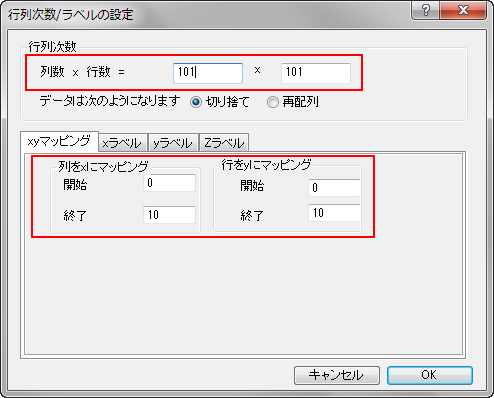
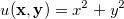
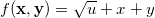

FAQ-779 2Dの入れ子になった関数グラフを作成するには？
Nest-Func-Mat
最終更新: 2015/08/25
Originでは、以下のように行列オブジェクトを使用して、2Dの入れ子になった関数をプロットできます。
-
=\sigma(u(\mathbf{x},\mathbf{y}),\mathbf{x},\mathbf{y})")
 |
サンプル
このチュートリアルでは、2D関数 ") で等高線図を作成します。 で等高線図を作成します。
-
=\sqrt{u}+x+y\\ u(\mathbf{x},\mathbf{y})=x^2+y^2 \end{matrix}\right.")
ここで![\mathbf{x}=\mathbf{y}=[0,0.1,0.2,0.3...,10]](../images/How_to_create_a_2D_nested_function_plot/math-128ba546eb7330a6f6d67bab04195e10.png "\mathbf{x}=\mathbf{y}=[0,0.1,0.2,0.3...,10]")
ステップ：
- 新しい行列ウィンドウボタン をクリックし、新しい行列を作成します。
- 次数を設定するには、メニューから行列: 次数/ラベルの設定を選択し、次の画像のように値を設定してから、 OKを押して適用します。
- 
- 次に、  となるように現在の行列オブジェクトの値を設定します。
- メニューから「行列：セル値の設定」を選びます。開いたダイアログでMat(1)の値を設定します。
-
x^2+y^2
-  としてMat(1)を計算内で使用する外部行列オブジェクトを追加します。
- 行列の左上にあるDボタンをクリックし、ショートカットメニューから追加を選びます。
- Dボタンを再度クリックして、2を選択し、2番目の行列オブジェクトをアクティブにします。
- 2番目の行列オブジェクトをアクティブにし、以下の式でMat(2)の値を設定します。
-
sqrt(Mat(1))+x+y
- 最後に、Mat(2)から等高線図を作図すると、以下のようになります。
-

|
キーワード: 等高線図、行列